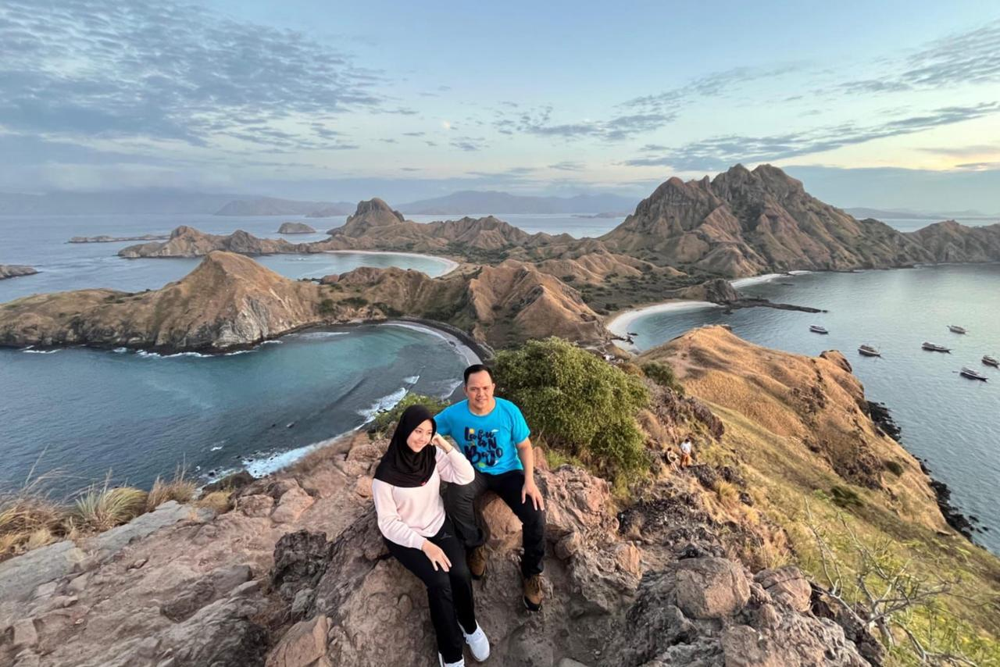
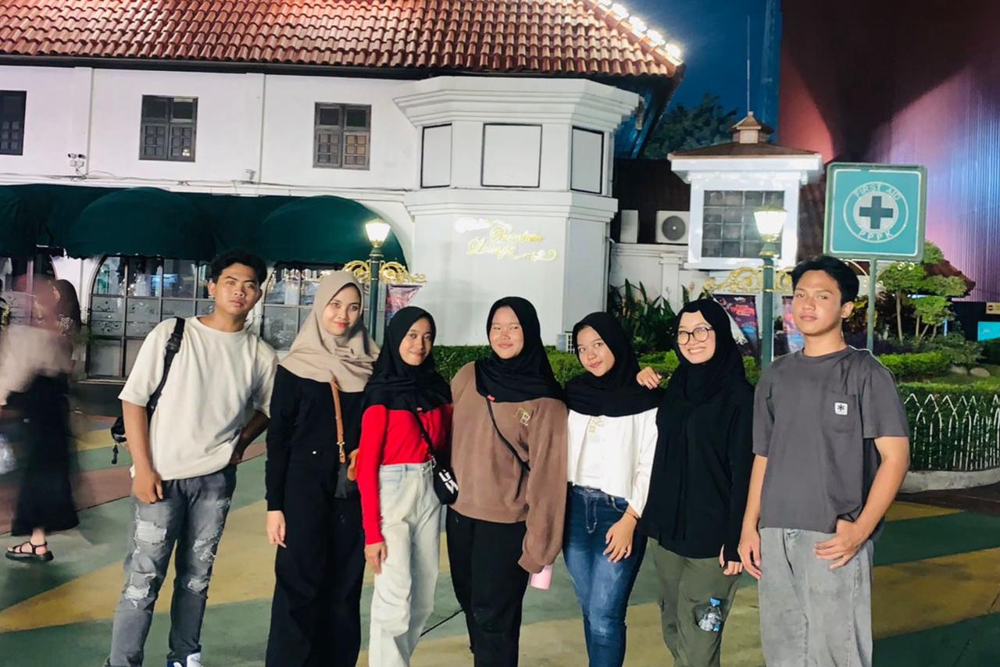
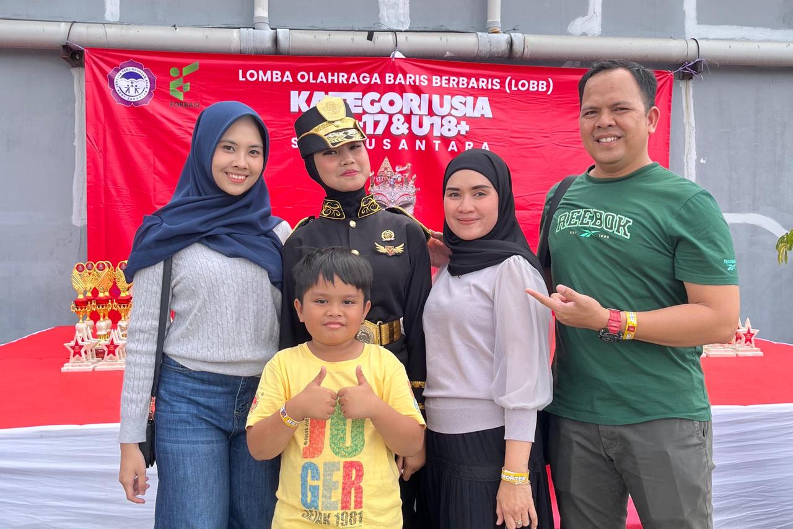
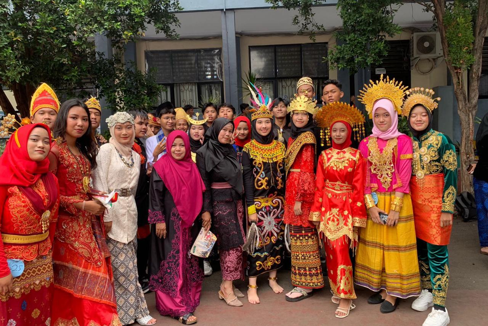
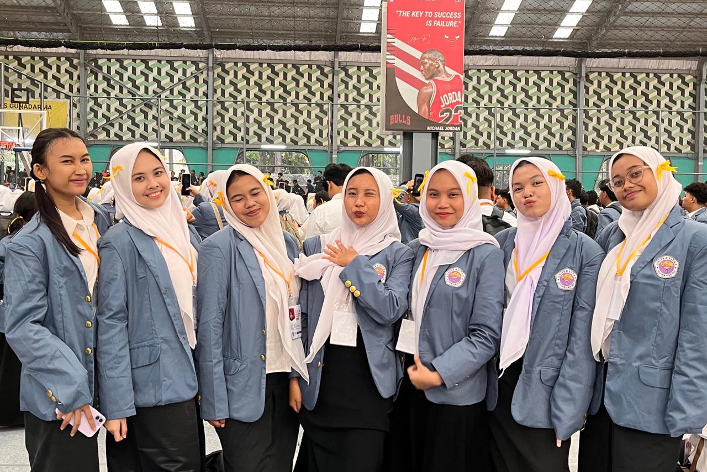
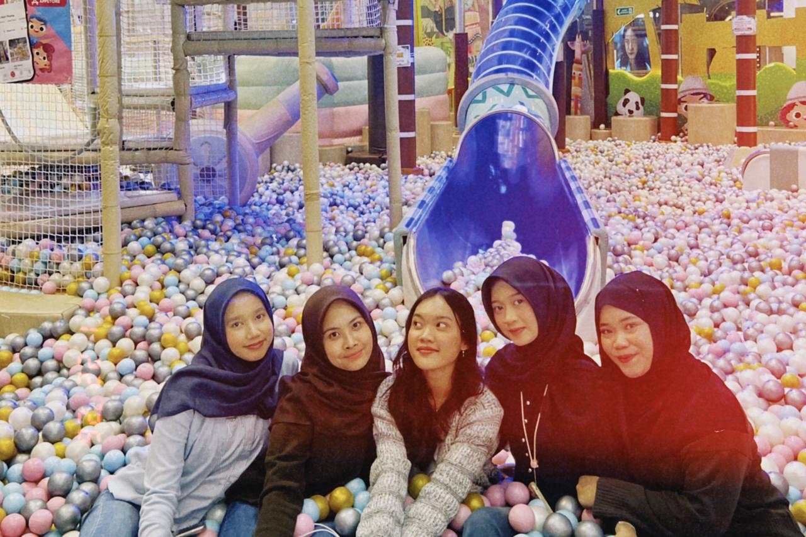

Saat Libur Lebaran saya pulang kampung ke Kuningan, Jawa Barat.
Kuningan adalah kampung halaman bunda saya, jadi saya selalu mudik kesana setiap lebaran.
Keluarga besar saya juga pada mudik kesana, karna setiap tahun pasti kita selalu kumpul.
Ada yang mudik beberapa hari sebelum lebaran dan ada juga yang mudik setelah lebaran. Saya dan keluarga selalu pulang beberapa hari sebelum lebaran, agar bisa Sholat Ied bersama Keluarga Besar di Masjid Kuningan Jawa Barat
Labuan Bajo
Saya pernah ke Labuan Bajo bersama Ayah saya.
Saat di Labuan Bajo, saya dan Ayah meningap di Kapal Phinisi.
Disana keseharian kami di Kapal, kami turun dari kapal jika hanya ingin mengunjungi objek wisata.
Kami mengunjungi beberapa objek wisata seperti: Pulau Padar, Pulau Komodo, Pink Beach, Pulau Taka Makassar dll.

Liburan SMA
Saat Liburan SMA saya Pergi ke Dufan bersama beberapa teman kelas saya.
Dari rumah kami menggunakan kendaraan masing-masing, kemudian kami bertemu di Stasiun Tangerang.
Di Dufan kita main banyak permainan sekaligus menonton pertunjukkan yang ada disana.
Main di Dufan seru banget, meskipun antriannya panjang.

Lomba Paskibra
Setiap adik perempuan saya Lomba Paskibra, Saya dan Keluarga selalu datang untuk mendukungnya.
Saya bangga dengan adik perempuan saya, karna dia mau mencoba dan menjalani hal yang sebelumnya belum pernah ia jalani.
Awalnya dia hanya mengikuti Ekstrakulikuler Paskibra, sampai akhirnya dia sering terpilih untuk mengikuti beberapa lomba paskibra.
Setelah ia selesai tampil lomba, kami sekeluarga selalu foto bersama.

Pagelaran P5
Saat kelas 3 SMA, sekolah saya mengadakan Pagelaran Seni P5.
Beberapa kelas akan menampilkan Pagelaran yang sudah ditentukan waktunya, 1 Kelas dibagi menjadi beberapa kelompok. Ada yang berjualan makanan khas banten, ada yang menampilkan drama legenda dan ada yang fashion show baju Adat Indonesia.
Kelompok saya mendapatkan bagian fashion show, satu kelompok isi 10 orang dan mempunyai partner nya masing-masing saat fashion show.
Jadi saat menampilkan fashion show kami jalan berdua sesuai dengan partner dan tema baju nya masing-masing. Pengalaman ini sangat seru, karna kami mempersiapkan banyak hal. Mulai dari Fitting baju, mencari aksesorisnya, latihan berkali-kali dll

Perpisahan SMP
Saat Perpisahan SMP, Sekolah saya mengadakan Acara Perpisahan di Bandung.
Di Bandung, Kami menginap 3 Hari 2 Malam.
Saya sekamar dengan 1 Guru pendamping dan beberapa temen kelas saya, setiap malam sebelum tidur saya dan teman-teman selalu cerita-cerita di ruang tengah.
Selama di Bandung, saat pagi hari kita suka jalan kaki untuk cari sarapan di luar. Waktu itu saya dan teman-teman makan bakso cuanki, rasanya enak banget dan hangat di perut karna di Bandung dingin banget kalau pagi hari. Saat di Bandung kami mengunjungi beberapa tempat, salah satunya adalah "Kawah Putih"
PKKMB Gunadarma
Saat PKKMB Gunadarma saya di antar orang tua saya.
Awalnya saya mau berangkat naik kereta sendiri karna tidak mau merepotkan orang tua, tapi ternyata tidak diizinkan oleh orang tua saya karna mereka khawatir takut saya kenapa-kenapa di jalan.
Saya bertemu banyak teman baru selama ospek, ada beberapa temen SMA saya juga yang kuliah di Gunadarma Jurusan Manajemen jadi saat ospek saya tidak sengaja bertemu dengan mereka.
Saya senang mengikuti PKKMB tersebut, karna saya jadi punya banyak teman dan pengalaman baru.

Playtopia
Saat Libur Kuliah saya dan teman-teman pergi Bermain ke Playtopia.
Kita ketemuan di Stasiun Tangerang, Dari rumah kita pakai motor sendiri-sendiri.
Setelah selesai main di Playtopia, kita photobooth dan makan sore.
Habis itu kita pulang naik KRL dan sesampainya di Stasiun Tangerang kita pulang dengan kendaraan masing-masing.

Rampak Beduk
Saat Pengambilan Nilai Praktik Akhir SMA.
Saya dan teman kelas saya bekerjasama untuk menampilkan Rampak Beduk.
Bagian Perempuan menari dan bagian lelaki bermain beduk lalu ada yang menampilkan silat juga.
Kami berlatih dengan sungguh-sungguh setiap pulang sekolah, kami latihan kurang lebih 1 bulan agar hasilnya maksimal.